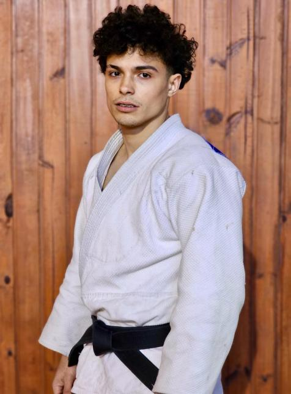
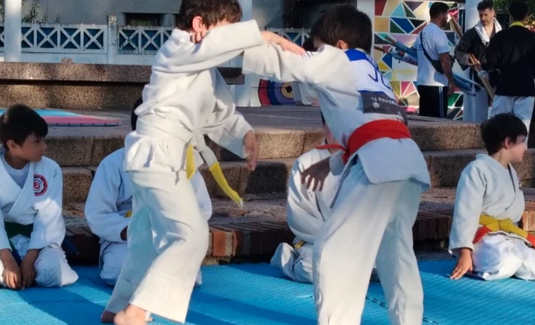
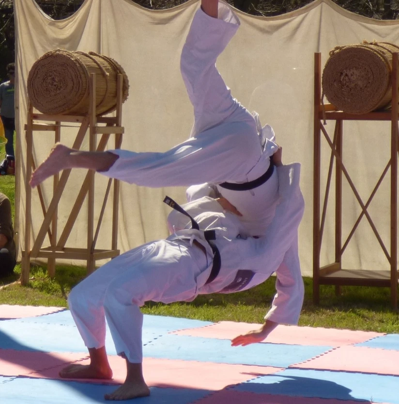
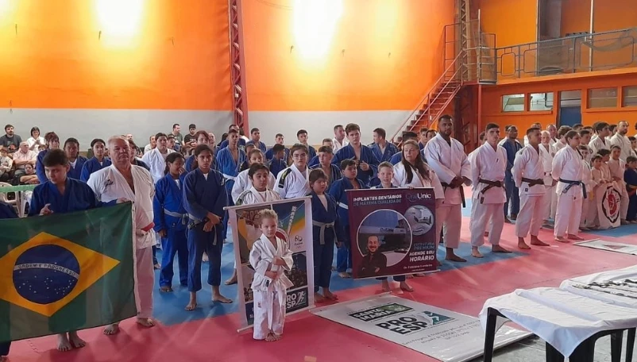
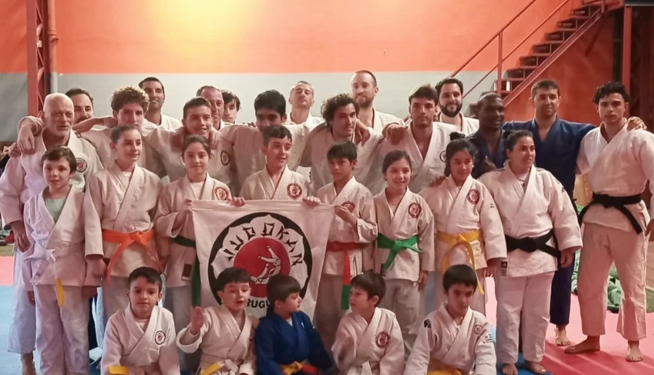

Sensei · 8.º Dan
Judo, Jiu-jitsu, Sumo y Kurash. Cuatro décadas formando atletas, campeones y personas que representaron a Uruguay en el mundo.
Asociación de Artes Marciales Judokan promueve el desarrollo y la enseñanza de Judo, Jiu-jitsu, Sumo y Kurash en Montevideo desde hace 40 años, con personería jurídica.
Nacida el 31 de julio de 1983, bajo la conducción del Sensei José Soca Montero (8.º Dan), en 1986 consiguió la primera medalla de oro sudamericana del club. Nuestros alumnos han integrado la Selección Nacional en competencias sudamericanas, panamericanas, mundiales y olímpicas.
Además: sala de musculación, cancha cerrada para handball y vóley, y desde 2024 partín artístico de la mano de la Academia Me.Cu.Al.
Maestros con décadas en el tatami. Cada clase tiene la guía de quien ya pasó por el camino que vas a recorrer.



Clases por grupo y franja horaria. Escribinos para coordinar una clase de prueba.










Llamanos para consultar horarios, inscripciones o coordinar tu clase de prueba.
095 351 871